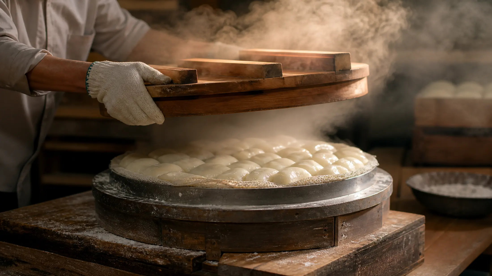
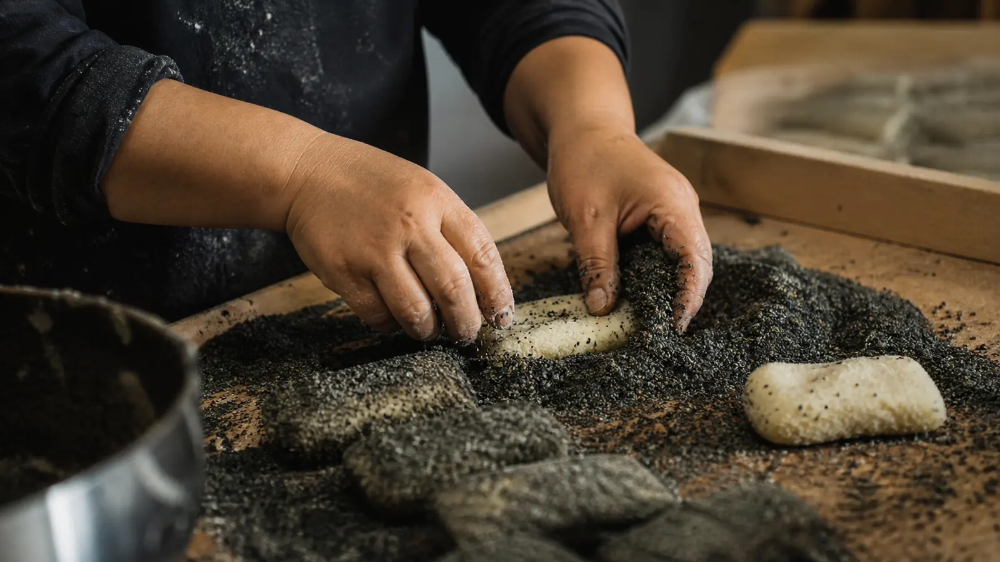
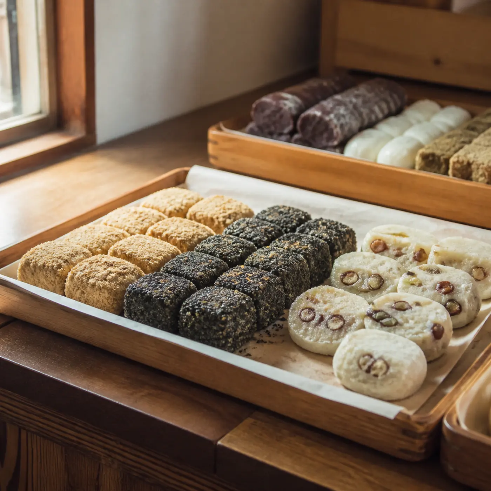
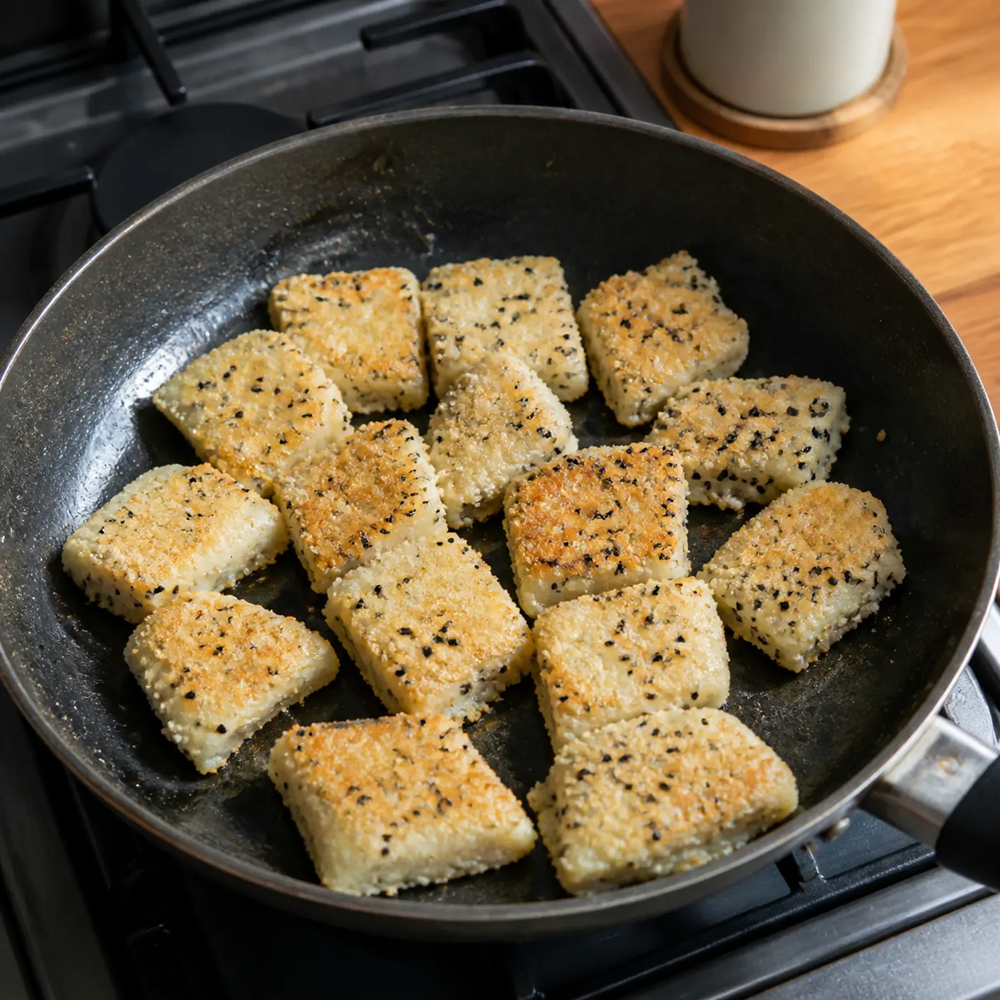

THE CHOICE
쌀부터 다루는 집
떡집의 방식은 대개 두 갈래로 갈린다. 빻아 놓은 쌀가루를 사서 쓰거나, 쌀부터 직접 다루거나.
안성의 떡집 오복시루는 후자를 택했다. 안성 들녘에서 직접 농사지은 쌀을 하나하나 씻고, 볶고, 빻아서 안친다. 인절미 고물에 들어가는 흑임자까지 손으로 가공한다. 첨가물로 맛을 내는 대신 저염·저당을 지킨다.
공정이 늘어난 만큼 시간이 든다.
글 안성마춤 웹진 편집부 · 사진 안성마춤 웹진 편집부

SHORT INTERVIEW
짧게 물었습니다
8월 12일 방문에서 네 가지만 직접 물을 자리입니다. 방송에 나온 문장을 여기에 옮기지 않습니다. 답이 오면 이 칸이 기사로 바뀝니다.
Q1 쌀부터 직접 다루면 손이 훨씬 많이 갈 텐데요.
Q2 하루에 몇 번 시루를 안치시나요?
Q3 요즘 어려운 점은 뭔가요?
Q4 어떤 떡을 가장 많이 찾으시나요?

THE TASTE
씹을수록 남는 단맛
씹을수록 퍼지는 쌀 본연의 단맛에는 그 선택이 그대로 들어 있다.
WHAT TO BUY
무엇을 파나요
| 품목 | 특징 |
|---|---|
| 인절미 | 흑임자 고물까지 직접 가공 |
| 영양찰떡 | 내용물 확인 예정 |
| 그 외 | 전체 품목 확인 예정 |
- 포장 단위
확인 예정
- 택배
가능 여부 · 조건 확인 예정
- 예약
필요 여부 · 대량 주문 시 확인 예정


KEEP & REHEAT
보관과 재가열
냉동해 둔 인절미나 영양찰떡은 드시기 30분 전에 자연 해동. 살짝 녹은 상태에서 프라이팬에 들기름을 조금 두르고 구우면 찰기가 완전히 살아난다.
VISIT
찾아가기
- 주소
현장 확인 후 업데이트
- 영업시간 · 휴무
현장 확인 후 업데이트
- 연락처
현장 확인 후 업데이트
- 주차
현장 확인 후 업데이트
이 집은 03 ONE DAY 하루 코스 12:40에 들어 있습니다. 외관 컷은 두 지면이 겹치지 않도록, 답사 후 한쪽에만 둡니다.
지금은 방송을 근거로 쓴 소개문에 가깝습니다. 떡을 사면서 네 가지만 물으면, 이 페이지는 직접 취재 기사가 됩니다.
특히 세 번째 질문. 어려운 점을 말하는 대목이 있어야, 나머지는 믿깁니다.